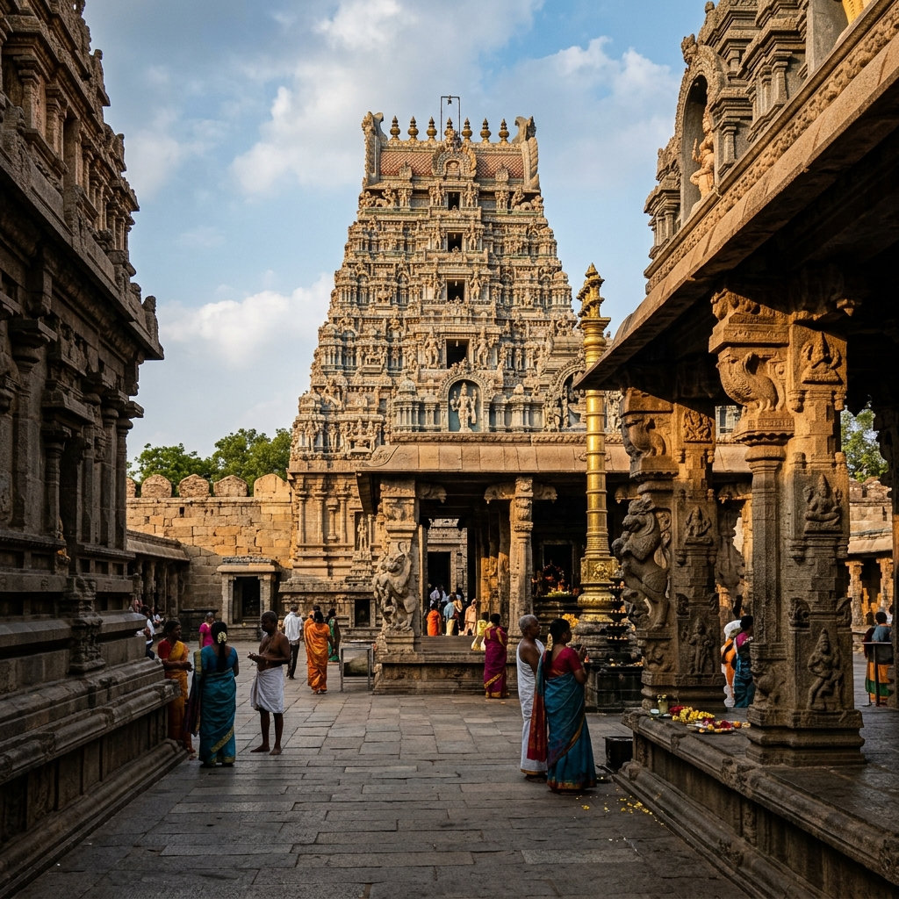
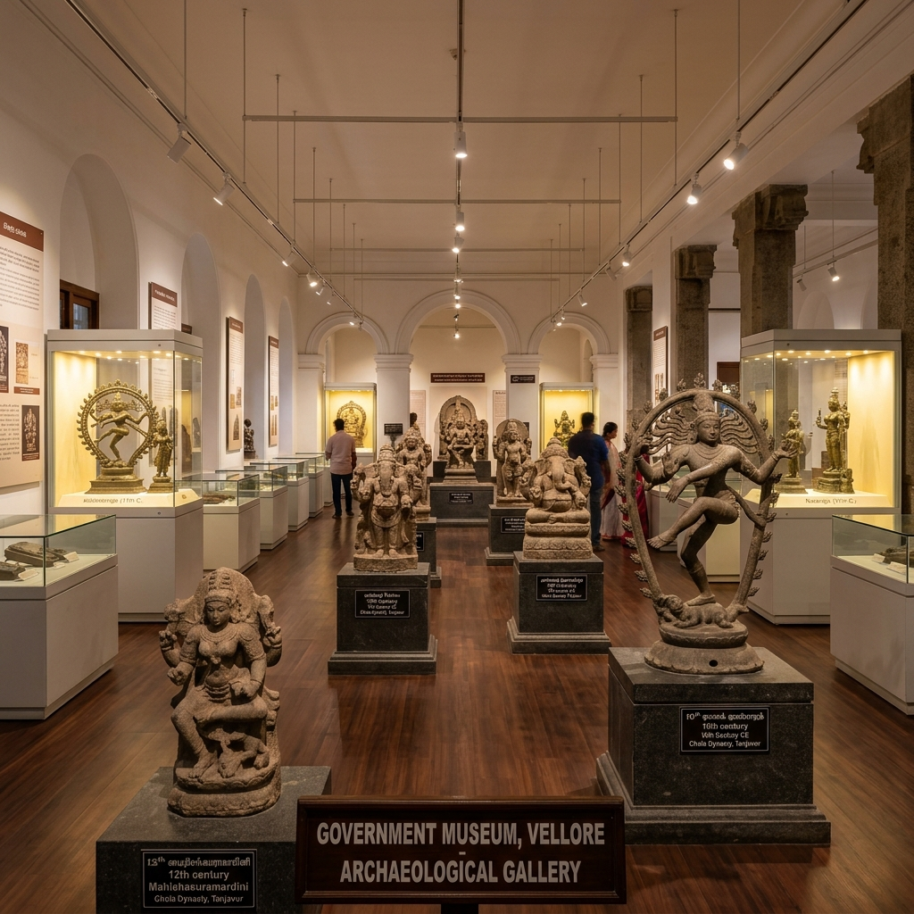
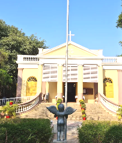
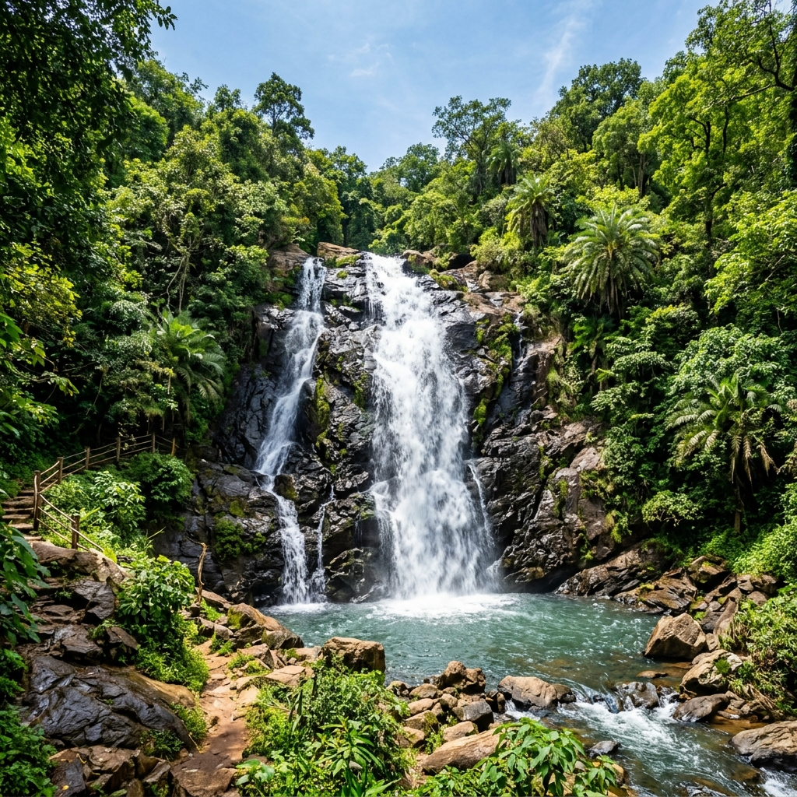
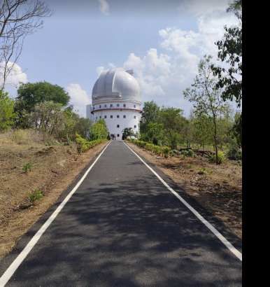

Places to Visit in Vellore
Explore the rich history, spiritual landmarks, and scenic getaways of Vellore. Here are the top attractions to visit in and around the historic city:
ℹ️
Official Tourist Assistance: For queries or assistance, contact the Vellore Government Tourist Office (located at Fort Vellore) at 0416–2217974.

Vellore Fort
- Address: Opposite Old Bus Stand, Fort Area, Vellore - 632002
- Timings: 8:00 AM – 6:00 PM (Entry Fee: ₹15)
- Location: View on Google Maps »

Sripuram Golden Temple
- Address: Sri Narayani Peedam, Thirumalaikodi, Vellore - 632055
- Timings: 8:00 AM – 8:00 PM (Ph: +91 416 220 6500)
- Location: View on Google Maps »

Jalakandeswarar Temple
- Address: Inside Vellore Fort Premises, Balaji Nagar, Vellore - 632002
- Timings: 6:30 AM – 1:00 PM & 4:30 PM – 8:30 PM
- Location: View on Google Maps »

Government Museum
- Address: Inside Vellore Fort, Fort Area, Vellore - 632002
- Timings: 9:00 AM – 12:30 PM & 2:00 PM – 5:00 PM
- * Closed on Tuesdays and Public Holidays

St. John's Church
- Address: Inside Vellore Fort, Fort Area, Vellore - 632002
- Timings: 9:00 AM – 5:00 PM
- Reference: British-era historic church from 1846
Ratnagiri Murugan Temple
- Address: Kilminnal, Ratnagiri, Vellore District - 632517
- Timings: 6:00 AM – 1:00 PM & 4:00 PM – 8:00 PM
- * Hill temple dedicated to Lord Murugan
Vallimalai Murugan Temple
- Address: Vallimalai Hill, Vellore District - 632520
- Timings: 6:00 AM – 7:00 PM
- * Ancient cave temple carved directly into rocky hills

Amirthi Zoo & Park
- Address: Amirthi, Near Javadu Hills, Vellore - 632102
- Timings: 8:00 AM – 5:00 PM (Closed on Tuesdays)
- * Peaceful forest getaway with seasonal waterfall

Jalagamparai Falls
- Address: Nagalathu Extension R F, Yelagiri Hills area, Tamil Nadu
- Timings: Best visited right after the monsoon
- * Scenic cascade created by the Attaru river

Vainu Bappu Observatory
- Address: Vainu Bappu Observatory, Kavalur - 635701
- Timings: Prior permission needed for stargazing
- * Houses one of Asia's largest optical telescopes

Yelagiri Hills
- Address: Yelagiri, Vellore District, Tamil Nadu
- Timings: Accessible 24 hours (Daytime best for travel)
- * Scenic hill station with orchards, rose gardens, and lakes